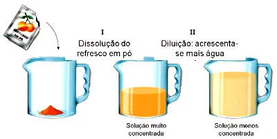

https://www.todamateria.com.br/diluicao-de-solucoes/
Diluição
No laboratório e em diversas situações do cotidiano, nem sempre precisamos utilizar uma solução na concentração em que ela foi preparada. Muitas vezes, é necessário torná-la menos concentrada, adicionando uma quantidade adequada de solvente. Esse processo é chamado de diluição.
1. O que é diluição?
A diluição é o processo pelo qual diminuímos a concentração de uma solução por meio da adição de solvente, sem acrescentar mais soluto.
Um exemplo cotidiano é adicionar água a um suco concentrado. A quantidade de substâncias dissolvidas provenientes do concentrado permanece a mesma, mas elas passam a estar distribuídas em um volume maior. Por isso, a concentração diminui.
O mesmo princípio é utilizado em laboratórios para preparar soluções mais diluídas a partir de soluções concentradas, chamadas de soluções-estoque.
2. O que acontece com a solução durante a diluição?
Durante uma diluição ideal, consideramos que:
- A quantidade de soluto permanece constante.
- O volume da solução aumenta com a adição de solvente.
- A concentração da solução diminui.
Portanto, a diluição não significa retirar soluto da solução, mas aumentar o volume em que ele está distribuído.
Por exemplo, se uma solução contém determinada quantidade de sal dissolvido e adicionamos água, a quantidade de sal permanece igual. Entretanto, como o volume final é maior, cada litro da solução passa a conter menos sal.
3. Fórmula da diluição
Como a quantidade de soluto permanece constante durante a diluição, podemos relacionar a concentração e o volume antes e depois do processo.
Ci × Vi = Cf × Vf
Em que:
- Ci: concentração inicial da solução.
- Vi: volume inicial da solução.
- Cf: concentração final da solução diluída.
- Vf: volume final da solução após a diluição.
Essa relação pode ser utilizada tanto para a concentração comum, em g/L, quanto para a concentração em quantidade de matéria, em mol/L, desde que a concentração seja expressa na mesma unidade antes e depois da diluição.
Os volumes também devem estar expressos na mesma unidade nos dois lados da igualdade. Por exemplo, podemos utilizar litros nos dois casos ou mililitros nos dois casos.
4. Calculando a concentração final
Quando conhecemos a concentração e o volume iniciais, além do volume final, podemos calcular a concentração depois da diluição:
Cf = (Ci × Vi) / Vf
Exemplo 1 — Diluição de uma solução de sal
Uma solução de cloreto de sódio apresenta concentração comum de 40 g/L e volume de 200 mL. Adiciona-se água até que o volume total alcance 800 mL. Qual é a concentração comum final?
Dados:
- Ci = 40 g/L
- Vi = 200 mL
- Vf = 800 mL
Aplicando a fórmula:
Ci × Vi = Cf × Vf
40 × 200 = Cf × 800
Cf = (40 × 200) / 800
Cf = 10 g/L
Resposta: a concentração comum final é de 10 g/L.
Observe que o volume foi multiplicado por quatro, enquanto a concentração foi dividida por quatro. Isso ocorre porque a quantidade de soluto permaneceu constante.
5. Calculando o volume final
Também podemos utilizar a fórmula para descobrir qual deve ser o volume final de uma solução para atingir determinada concentração.
Isolando o volume final:
Vf = (Ci × Vi) / Cf
Exemplo 2 — Preparando uma solução mais diluída
Um laboratório possui 100 mL de uma solução com concentração de 3 mol/L. Qual deve ser o volume final para que a solução apresente concentração de 0,5 mol/L?
Dados:
- Ci = 3 mol/L
- Vi = 100 mL
- Cf = 0,5 mol/L
Aplicando a fórmula:
Vf = (3 × 100) / 0,5
Vf = 600 mL
Resposta: o volume final deve ser de 600 mL.
Como o volume inicial era de 100 mL, devem ser adicionados aproximadamente 500 mL de solvente, considerando que os volumes sejam aditivos nesse exemplo.
6. Calculando o volume de solvente adicionado
Em alguns exercícios, o objetivo não é encontrar a concentração final nem o volume final, mas determinar quanto solvente deve ser adicionado.
Quando os volumes são considerados aditivos, utilizamos:
Vsolvente adicionado = Vf - Vi
Exemplo 3 — Quantidade de água adicionada
Uma solução possui volume inicial de 150 mL e deve ser diluída até atingir 500 mL. Qual volume de água deve ser adicionado?
Vágua = 500 - 150
Vágua = 350 mL
Resposta: devem ser adicionados 350 mL de água, considerando volumes aditivos.
7. Fator de diluição
O fator de diluição indica quantas vezes a solução foi diluída em relação à sua concentração inicial. Ele pode ser calculado pela razão entre o volume final e o volume inicial, ou entre a concentração inicial e a concentração final.
F = Vf / Vi = Ci / Cf
Essa relação vale para uma diluição em que a quantidade de soluto é conservada.
Exemplo 4 — Determinando o fator de diluição
Uma solução apresenta concentração inicial de 2 mol/L e, após a diluição, passa a apresentar concentração de 0,4 mol/L. Qual foi o fator de diluição?
F = Ci / Cf
F = 2 / 0,4
F = 5
Resposta: o fator de diluição é 5. Isso significa que a concentração final corresponde a um quinto da concentração inicial e que o volume final é cinco vezes o volume inicial.
8. Diluições sucessivas
Uma solução também pode passar por várias diluições consecutivas. Em cada etapa, adiciona-se solvente à solução obtida na etapa anterior.
Quando o mesmo soluto é conservado ao longo de todas as etapas, podemos aplicar a relação de diluição a cada uma delas. Também podemos calcular o fator de diluição total multiplicando os fatores individuais.
Exemplo 5 — Duas diluições sucessivas
Uma solução é diluída cinco vezes e, depois, a solução resultante é diluída mais duas vezes. Qual é o fator de diluição total?
Ftotal = 5 × 2
Ftotal = 10
Resposta: o fator de diluição total é 10. A concentração final corresponde a um décimo da concentração inicial.
9. Cuidados importantes
- Quantidade de soluto: na diluição, ela permanece constante, desde que não ocorram reações químicas, perdas ou outros processos que alterem a quantidade de soluto.
- Volume final: é o volume total da solução após a adição do solvente, e não o volume de solvente adicionado.
- Unidades: utilize unidades compatíveis para os volumes inicial e final.
- Concentração: a unidade da concentração inicial deve ser a mesma da concentração final.
- Volume de solvente: a diferença entre os volumes final e inicial fornece o volume adicionado quando os volumes são considerados aditivos. Em misturas reais, os volumes nem sempre são perfeitamente aditivos.
Resumo
- Diluição é a redução da concentração de uma solução por adição de solvente.
- A quantidade de soluto permanece constante em uma diluição ideal.
- A fórmula principal é Ci × Vi = Cf × Vf.
- O volume final é maior que o inicial quando se adiciona solvente a uma solução.
- A concentração final é menor que a inicial em uma diluição com adição efetiva de solvente.
- O fator de diluição pode ser calculado por F = Vf / Vi = Ci / Cf.
Exercícios de fixação
1. Explique o que é diluição e o que acontece com a quantidade de soluto, o volume e a concentração durante esse processo.
2. Uma solução de concentração comum igual a 60 g/L possui volume inicial de 100 mL. Após a adição de água, o volume final passa a ser 600 mL. Calcule a concentração final.
3. Uma solução de concentração 2 mol/L apresenta volume de 250 mL. Ela é diluída até atingir um volume final de 1 L. Determine a concentração final.
4. Um técnico possui 300 mL de uma solução com concentração de 1,5 mol/L. Qual deve ser o volume final para que a concentração passe a ser 0,3 mol/L?
5. Uma solução apresenta volume inicial de 80 mL e deve atingir volume final de 400 mL. Qual volume de solvente deve ser adicionado, considerando volumes aditivos?
6. Uma solução de concentração 50 g/L deve ser diluída até atingir concentração de 10 g/L. Determine o fator de diluição.
7. Uma solução de concentração inicial de 4 mol/L passa por duas diluições sucessivas: primeiro, sua concentração é reduzida por um fator de 2; depois, por um fator de 5. Qual é a concentração final?
8. Um estudante afirma que, ao adicionar água a uma solução, a massa de soluto aumenta porque o volume fica maior. Explique por que essa afirmação está incorreta.
O conteúdo dessa página foi gerado por IA pois a Moderna PLUS não se aprofunda aos conceitos de base.
Fontes consultadas e complementares: